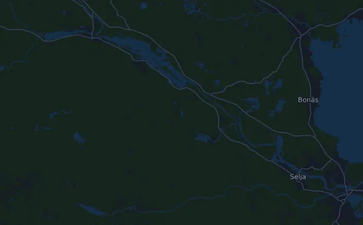

Ultravasan 45 43.8 km
- Distance
- 43.8 km
- Elevation gain
- ↑ 753 m
- Highest point
- 317 m a.s.l.
- Surface
- Trail
- Profile
- Hilly
- Start
- 10:00
Elevation profile
Prepare with Mila
Mila is a running coach app. Add a race to your plan and the coach plans your weeks up to race day around your form, and gives you a finish-time forecast and a plan for pacing, drinks and fuel on the course.

The right run, on the right day.
The course

About the course
Ultravasan 45 is a trail race in Oxberg, Sweden, over 43.8 km. The course climbs 753 m and descends 795 m in total, 17 m per km, which makes it hilly. The highest point is 317 m above sea level and the lowest 192 m.
The biggest climb starts at km 4.8: 75 m of ascent over 3.5 km at 2.1 % on average, up to 317 m. In total the course has 7 climbs of at least 25 m; the last one starts at km 30.9.
In the Mila app, the coach describes the course in detail in your language and plans your pacing and fueling for it.
Climbs
| Starts at | Length | Gain | Gradient | Top (m above sea level) |
|---|---|---|---|---|
| km 0.8 | 2.4 km | 26 m | 1.1 % | 266 |
| km 4.8 | 3.5 km | 75 m | 2.1 % | 317 |
| km 12.0 | 1.2 km | 45 m | 3.8 % | 297 |
| km 13.7 | 1.1 km | 27 m | 2.5 % | 313 |
| km 19.0 | 820 m | 28 m | 3.4 % | 294 |
| km 22.7 | 1.5 km | 38 m | 2.6 % | 287 |
| km 30.9 | 1 km | 27 m | 2.7 % | 263 |
Before the start
Start times
- 10:00
Source: vasaloppet.se, retrieved 15 October 2026
Pace table
Ultravasan 45 43.8 km in 3:45:00 – pace per km and splits
5:09 per km · km 10: 51:26 · km 20: 1:42:51 · km 30: 2:34:17 · finish: 3:45:00
Ultravasan 45 43.8 km in 4:30:00 – pace per km and splits
6:10 per km · km 10: 1:01:43 · km 20: 2:03:26 · km 30: 3:05:09 · finish: 4:30:00
Ultravasan 45 43.8 km in 5:00:00 – pace per km and splits
6:51 per km · km 10: 1:08:34 · km 20: 2:17:09 · km 30: 3:25:43 · finish: 5:00:00
Ultravasan 45 43.8 km in 5:45:00 – pace per km and splits
7:53 per km · km 10: 1:18:51 · km 20: 2:37:43 · km 30: 3:56:34 · finish: 5:45:00
The times assume an even pace the whole way. This is plain arithmetic, not a forecast: on climbs, in crowds and at aid stations the pace varies.
Frequently asked questions
When is Ultravasan 45 43.8 km?
Ultravasan 45 43.8 km takes place on Saturday, 21 August 2027. Check the date and start time with the organizer.
What time does Ultravasan 45 43.8 km start?
According to the organizer: 10:00.
How long is Ultravasan 45 43.8 km and how much climbing is there?
The race is 43.8 km with 753 m of climbing and 795 m of descent. The highest point is 317 m above sea level.
What is the course of Ultravasan 45 43.8 km like?
The course is hilly, with 17 m of climbing per km on average. It has 7 climbs of at least 25 m; the biggest starts at km 4.8: 75 m over 3.5 km. It runs from the start to a finish in another place. The surface is trail.
How should I pace Ultravasan 45 43.8 km?
Aim for an even effort rather than an even pace: let the pace drop on the climbs, win it back where it levels out, and hold back in the first kilometres. The biggest climbs start at km 4.8, km 12.0, km 19.0 and km 22.7. In Mila you get a pace plan for this course, based on your own form.
More races like this
More races nearby
- Stockholm Halvmaraton 21 km21 August 2027 · Stockholm, Sweden
- Fjällmaraton Sälen 42 km21 August 2027 · Sälen (Lindvallen, Experiumtorget), Sweden
- Midnattsloppet Göteborg 10 km21 August 2027 · Göteborg, Sweden
- Trailvasan 3021 August 2027 · Oxberg, Sweden
- Ultravasan 90 91.7 km21 August 2027 · Sälen (Berga by), Sweden
- Midnattsloppet Malmö 10 km28 August 2027 · Malmö, Sweden
Prepare with Mila
The right run, on the right day.
Details come from the course file and the organizer's information. Check the date, start times and rules with the organizer.
Mila is not affiliated with, sponsored by or endorsed by the organizer or the race's sponsors. Names and trademarks belong to their owners. Organizer or rights holder? Ask for a change or a removal